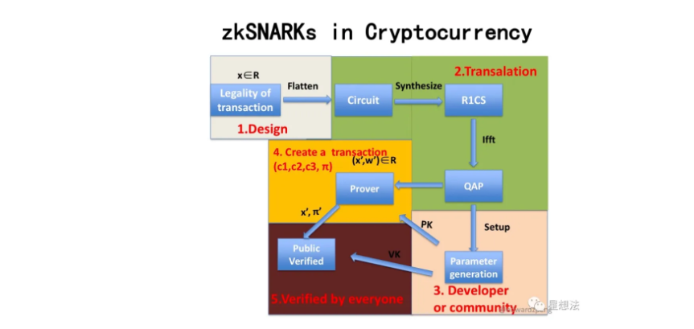

国密sm2算法
1. 概述
SM2算法是中华人民共和国政府采用的一种公钥加密标准，由国家密码管理局于2010年12月17日发布。在商用密码体系中，SM2用于替换RSA算法，可用来实现非对称加密、数字签名、密钥交换等功能。作为一种基于椭圆曲线的公钥密码算法，SM2算法在相同安全程度下，较RSA算法在密钥规模上存在优势。
| SM2 | RSA | |
|---|---|---|
| 密钥规模 | 192-256bit | 2048-4096bit |
算法标准包括4个部分：
1. 总则，适用于基域为素域和二元扩域的椭圆曲线公钥密码算法；
2. 数字签名算法，适用于商用密码应用中的数字签名和验证，可满足多种密码应用中的身份认证和数据完整性、真实性的安全需求；
3. 密钥交换协议，适用于商用密码应用中的密钥交换，可满足通信双方经过两次或可选三次信息传递过程，计算获取一个由双方共同决定的共享秘密密钥（会话密钥）；
4. 公钥加密算法，适用于商用密码应用中的消息加解密，消息发送者可以利用接收者的公钥对消息进行加密，接收者用对应的私钥进行解密；相关标准为“GM/T 0003.1-2012 SM2 椭圆曲线公钥密码算法第1部分：总则”，“GM/T 0003.2-2012 SM2 椭圆曲线公钥密码算法第2部分：数字签名算法”，“GM/T 0003.3-2012 SM2 椭圆曲线公钥密码算法第3部分：密钥交换协议”，“GM/T 0003.4-2012 SM2 椭圆曲线公钥密码算法第4部分：公钥加密算法”，“GM/T 0003.5-2012 SM2 椭圆曲线公钥密码算法第5部分：参数定义“。
2. 签名算法
数字签名是附加在数据单元上的一些数据，或是对数据单元所作密码变换的结果，当正常应用时提供如下服务：
- 数据来源的确认；
- 数据完整性的验证；
- 签名者不可抵赖的保证。
数字签名算法由一个签名者对数据产生数字签名，并由一个验证者验证签名的可靠性。每个签名者有一个公钥和一个私钥，其中私钥用于产生签名，验证者用签名者的公钥验证签名。
在签名的生成过程之前，要用密码杂凑函数（哈希函数）对消息M (包含和待签消息M)进行压缩。
同理，在验证过程之前，要用密码杂凑函数对 (包含和验证消息 )进行压缩。
2.1. 系统参数
椭圆曲线的系统参数为：
- ：包含 个元素的素域
- 椭圆曲线方程的参数a、b
- ：椭圆曲线的基点（）
- ：基点G的阶，由基点生成的群的元素的个数
- 可选项：n的余因子（）
除了定义了椭圆曲线的参数和签名算法所需要的辅助函数：哈希函数和随机数发生器外，标准引入了用户信息标识的概念。
签名者拥有长度为比特的可辨别标识，在标准规定的签名算法中，需要在生成签名和验证签名前计算用户A的哈希值。，其中是由转换而成的两个字节。
2.2. 签名生成
- 预处理
计算：
- 签名
输入：M，，私钥
输出：签名对
A1: 消息处理：
A2: 计算
A3: 产生随机数
A4: 计算曲线点
A5: 计算， 若或则返回A3
A6: 计算 ，若则返回A3
A7: 输出签名对
2.3. 签名验证
- 预处理
计算：
- 验证
输入：消息，签名， 公钥
输出：1 or 0
B1: 检验是否成立，若不成立则验证不通过；
B2: 检验是否成立，若不成立则验证不通过；
B3: 消息处理：
B4: 计算
B5: 计算
B6: 计算椭圆曲线点
B7: 计算 ，检验 是否成立，若成立则验证通过；否则验证不通过
2.4. 正确性说明
展开步骤B6中的等式 根据签名生成中A6步骤的等式，可得
因此，步骤B6中的等式可以恢复出签名生成的曲线点
3. 密钥交换
密钥交换协议是两个用户A和B通过交互的信息传递，用各自的私钥和对方的公钥来商定一个只有他们知道的秘密密钥。这个共享的秘密密钥通常用在某个对称密码算法中。该密钥交换协议能够用于密钥管理和协商。
3.1. 密钥交换流程
用户A和B双方为了生成相同的会话密钥，需要进行如下交互：
记
用户A：
A1：产生随机数； A2：计算椭圆曲线点； A3：将发送给用户B；
用户B：
B1：产生随机数；
B2：计算椭圆曲线点；
B3：计算；
B4：计算；
B5：验证RA是否满足椭圆曲线方程，若不满足则协商失败；否则计算
B6：计算椭圆曲线点，若V是无穷远点，则B协商失败；
B7：计算；
B8：将发送给用户A；
用户A：
A4：计算
A5：计算；
A6：验证是否满足椭圆曲线方程，若不满足则协商失败；否则计算
A7：计算椭圆曲线点，若U是无穷远点，则A协商失败；
A8：计算；
PS：上述步骤省略了校验步骤。
正确性说明：
将步骤B6和步骤A7中生成的椭圆曲线点U和V分别展开，可得：
4. 公钥加密
公钥加密算法规定发送者用接收者的公钥将消息加密成密文，接收者用自已的私钥对收到的密文进行解密还原成原始消息。
4.1. 辅助函数
| 要获得的密钥数据的比特长度 | |
|---|---|
| 参数 | 定义 |
| 其输出是长度恰为v比特的哈希函数 | |
| 32比特构成的计数器 |
辅助函数：
-
哈希函数：使用国家密码管理局批准的密码杂凑算法，如SM3密码杂凑算法
-
:
-
初始化计数器
- 对i从1到 执行：
- 计算
- ct ++ //之所以要计数器++，是为了满足最终KDF的输出是均匀随机的，如果不加的话，则每次hash输出的都是同一个值。
- 若是整数，则，否则 为最左边的()比特
4.2. 加密流程
输入：消息M，为消息的长度，公钥
输出：临时公钥()、密文（）、消息认证码（）
A1：产生随机数；
A2：计算椭圆曲线点
A3：计算椭圆曲线点，若S是无穷远点，则报错并退出；
A4：计算椭圆曲线点 // A与B共同持有的密钥，因为A知道B的公钥，然后B是知道，B可以利用自己的私钥与计算出。
A5：计算，若t为全0比特串，则返回A1；
A6：计算；//t不能全为0，如果全为0，则C_2=M
A7：计算；验证消息的完整性，以及验证的确是A发出来的。
A8：输出密文。
4.3. 解密流程
输入：密文，私钥
输出：明文或fail
B1：验证是否满足椭圆曲线方程，若不满足则报错并退出；
B2：计算椭圆曲线点，若S是无穷远点，则报错并退出；
B3：计算
B4：计算，若t为全0比特串，则报错并退出；
B5：计算；
B6：计算，检验，若检验失败则报错并退出；
B7：输出明文
代理重加密PRE
随着大数据和云端存储服务的兴起，越来越多的用户选择将数据交由云端服务商进行存储。为了保护用户数据的隐私，用户存储在云端的数据是以密文形式存在的。在现实应用中存在着大量数据共享的场景。
在传统的数据共享方案中，用户需先将加密存储在云端的文件进行下载，在本地解密，然后再使用密钥协商等方式将数据共享给数据使用方。而这种方式会耗费数据拥有者大量的通信和计算开销，并且将占用用户本地的存储空间。
代理重加密的提出为数据共享提供了新思路。它是一种允许第三方（代理）对密文进行重加密，从而使得被授权用户（数据使用者）可以解密的方案，实现了在不泄漏数据拥有者私密信息的情况下，云端密文数据的共享。该方案较传统方案在通信、计算和存储开销上都存在明显的优势，在文件共享，邮件转发等场景中存在着广泛的应用前景。下面我们通过如下一个简要的例子介绍PRE的流程：
假设用户Alice在云端加密存储了文件，现在Alice想要将该文件共享给另一个用户Bob。其做法如下：
- Alice利用自己的私钥和Bob的私钥/公钥生成重加密密钥，并把该密钥发送给代理；
- 代理使用重加密密钥对Alice存放在云端的密文文件进行重加密；
- Bob直接下载重加密后的文件，并使用自己的私钥对数据进行解密。

零知识证明
零知识证明这个概念最早由Goldwasser、Micali和Rackoff提出的，其表达核心思想是证明者要向验证者证明一个statement的正确性，与此同时不泄露任何额外的信息。它具有如下三个重要的性质：
- 完备性completeness
- 合理性soundness
- 零知识性zero-knowledge
近几年零知识证明被广泛应用到区块链中，如可验证的外包计算、匿名证书、范围证明、隐私密码学货币等需要平衡隐私性和机密性的应用场景，它已经在隐私性和可扩展性方面成为了一个非常重要的工具。在实际应用中客户端下载和验证交易频繁，因此要部署高效实用的零知识证明协议，需要该协议的证明足够小，验证足够高效（small proof size and fast verification）。随着密码学技术的不断发展，零知识证明的落地应用层出不穷。这些优秀的项目对零知识证明的技术的实用性进行了一系列的探索：
- 基于UTXO模型的零知识证明协议：零知识证明在密码学货币上具有广泛的应用，Zcash是zk-SNARKs的首个应用，它利用Groth16协议，实现了基于UTXO模型下交易双方地址和金额的完全隐藏，并且能够生成较短的高效的可验证的证明。但是该技术需要采用CRS来构造zk-SNARK，即需要引入可信第三方来生成一组公共参考串，与此同时也引入了对可信第三方的信任问题，尽管可以利用MPC等技术实现分布式协作生成CRS，但是依然无法完全解决CRS的引入带来的信任问题。

- 基于账户模型的零知识证明协议：当前的区块链隐私支付系统，如Zcash和Monero等，均是基于UTXO模型，而Zether协议能实现基于账户模型的隐私支付，且能实现交易双方和交易金额的匿名化，该协议以智能合约的形式，方便地部署到基于账户模型的区块链系统中，而不需要修改底层链的逻辑。此外AZTEC协议采用Plonk零知识证明协议，实现了基于Ethereum账户模型下的隐私交易。
- 去CRS的零知识证明协议：目前在区块链领域中，大部分高效可验证的零知识证明协议都依赖于CRS。因此去CRS的零知识证明协议也是各个项目重点关注的话题。围绕该热议话题的主要分为两个方向：（1）探索完全去CRS的零知识证明协议，如bulletproof利用向量内积的方法实现了范围的证明，zk-STARK实现无需可信公共参数设置的证明，但是这两个零知识证明协议的证明较大，验证时间也较长。这也是完全去CRS的零知识证明协议不能被广泛应用的一个重要原因。
- CRS的可更新的零知识证明协议：基于CRS的零知识证明协议会引入第三方信任问题，完全去CRS的零知识证明协议产生的证明较大，验证不够高效，因此有项目尝试探索介于两者直接的一种零知识证明协议，即基于可更新的结构化参考串（updatable structured reference string）的协议，如Sonic、Plonk它们支持SRS的可更新操作，这两个协议本质上仍然是需要可信的参数设置，但是通过MPC等技术一定程度上提高了用户对CRS安全性的信心。目前AZTEC利用Plonk协议实现了Ethereum上的隐私交易。
- 可扩展性的零知识证明协议：zk Rollup是一种新型的Layer2扩容方案，将链上的数据放到layer2解决。用户发送的交易，由relayer收集，生成零知识证明将发布交易后的新状态跟之前的状态捆绑在一起，保证用户状态变更的正确性。链上只存储用户状态的merkle树根，通过智能合约验证零知识证明的正确性。
- 基于具体应用需求的零知识证明协议：在实际中还有许多基于具体应用需求，并利用上述提及的零知识证明技术设计出的协议，如在存储场景下，filecoin的时空证明（proof of spacetime）和复制证明（proof of replication）是利用zk-SNARKs的Succinct特性的典型案例；在公平交易的场景下，zkPoD实现零信任的去中心化公平交易系统，在不可信双方之间进行交易，确保买卖双方间交易的公平性。
目前零知识证明技术在实际应用中非常成熟，在我们的联盟链中，我们会根据实际的场景需求，采用或设计对应的零知识证明协议来满足我们的场景需求。